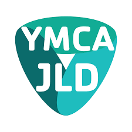
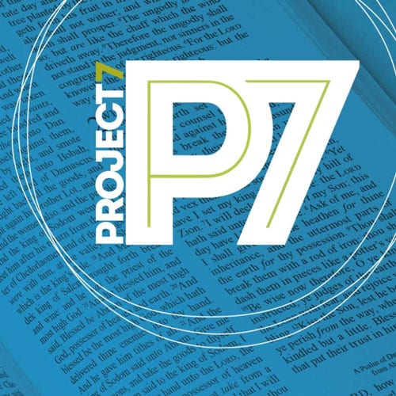
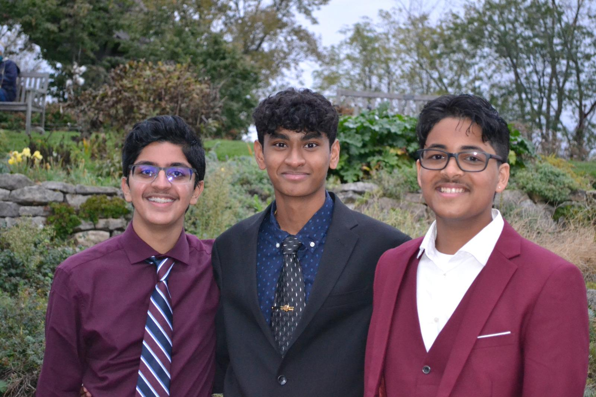
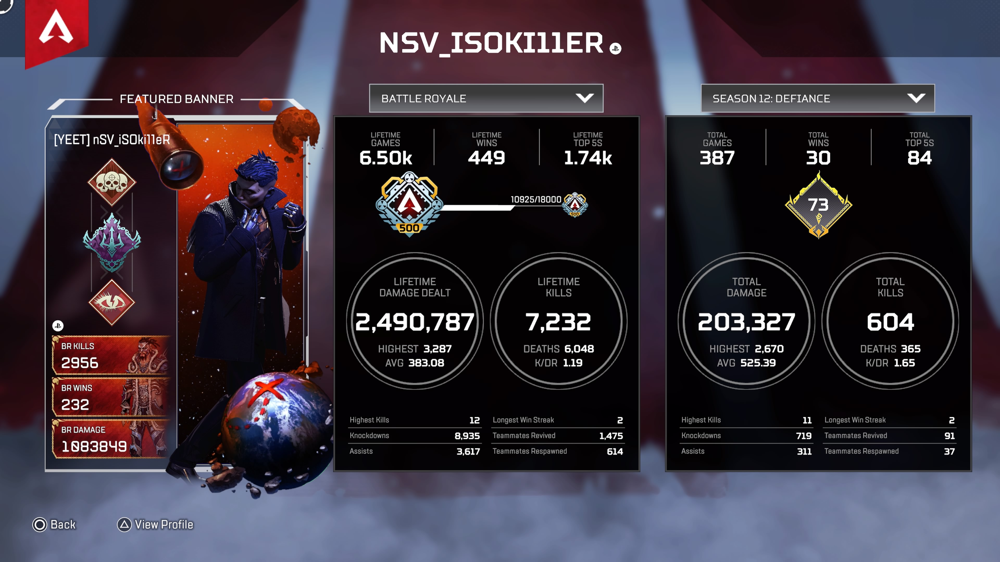

Experiences
Introduction: My family, culture, and hobbies
Welcome to my Experiences Page! Here you will learn a little about myself! First, I live with my parents and two younger brothers, Jacob and Matthew, and my grandparents. I also love spending time with my family and friends. I have also been out of the country several times in places like India & the Middle East. I have been in several states on vacation like Tennessee, New York, Florida, California, Maryland, New Jersey and right here in Ohio, like Hocking Hills and Cedar Point. I am also proud of my Indian culture/heritage. My parents were born in Kerala, India, and I have been there several times. I am proud to say that I can speak my native language, Malayalam, pretty fluently. In India, we really take relationships seriously, like family. My parents always say to never disrespect anyone we see because they may be a really great person. I also really love Indian food. I also love video games and my PlayStation 5. Some games I like to play include Apex Legends, Spiderman, and Ghost of Tsushima. I also like watching the NBA (National Basketball Association), Netflix, and Disney+. My favorite sports teams are the Cleveland Cavaliers and Brooklyn Nets. My favorite athlete is Kyrie Irving, on the Brooklyn Nets, because of his crazy handles and tough finishing ability.
Extracurriculurs/Honors
- Key Club- LTG
- Student Ambassador
- P7 Bible Club
- SAT ACT Club
- Lets Get Active Club- co founder
- JCOWA
- Worship Leader-Guitar
- Science Fair-State scored excellant
- High Honor Roll
- Additive Manufacturing Credential
- Junior Leadership Dayton
- Students Lead Dayton
At school I am part of a few clubs (I did not do many in freshman year because I was afraid of how I would balance school and clubs, bit I will do more next year) like Math Club, where we meet on Fridays and part of the After School Game Club where we meet on Thursdays. I am also a Student Ambassador at DRSS, ambassadors lead school tours to business partners, teachers from other schools, and prospective students. We have info sessions for students who want to come, and at the end we take them on a tour of the whole school.
What I do outside of school
Outside of school, I am part of a lot of extra-curricular activities. For one, I do Kumon which is a Math and Reading program. It’s an after-school programs where kids can come and do higher level math and reading so they stay ahead in school and have fun with challenging problems. I have been doing this program for 11 years now. Over the years I did Kumon, I built my way up to do math work 2 years above my grade level. I also go to the Miami Valley Math Circle at Wright State. I also go to church every Sunday and prayer on Saturdays. I also play basketball, tennis, & swimming. So this is the end of my About Me page, I hope you learned a lot on who I am and what my passions are!
The Importance of Extra-curricular Activities
Extra-curricular activities are very important, even if they are not formal or relate to school. These clubs, activities, and organizations help students to relax or see a different side of academics and give them a chance to apply the skills they learned in class. These activities help students to learn to manage their time and to balance their time between school and other things. It also helps students to realize there is more to do than just schoolwork after school is over. Extra-curricular activities also help students socialize and learn to interact with different types of people, and Communication, one of our 5 Qualities really comes into work. Essentially, these activities help balance a student and help them expand their horizons and perspective of what education and academics are.
Key Club Lieutenant Governor (LTG)
This is a leadership position that I took on that will begin around May of 2022 and end in April of 2023. I am LTG of Division 4W in Ohio including Key Clubs at Alter, Centerville, Clinton, DECA, Northridge, and a few others. Basically, my job is to act as a liaison between each individual Key Club and the Key Club Board of Ohio. I assist with any needs they may have and provide resources for whatever needs they may have. I also keep each key club updated on what the others are doing in a form of a monthly newsletter, sent out to all the key clubs in my divisions. I also complete monthly report forms of what I have been doing to the Board. At the training program day, I was very overwhelmed by all the duties and responsibilities I was about to take over, especially since the last one was Neha! However, I am ready for this time commitment as I know this leadership position will highlight me from others in the college application process. I also believe it a good test run to see what skills I have and still need to improve.
Junior Leadership Dayton (JLD)

This was a leadership program hosted by the YMCA and many other sponsors. It is focused on teaching juniors, across many school districts, what it means to be a student leader and expose us to many nonprofits in the Dayton community. It was an extremely unique opportunity that we were appointed to apply for, and we met many esteemed individuals including the new City of Dayton Mayor Jeff Mims, and many directors and presidents of nonprofits, State of Ohio departments, and companies. Some of my memorable experiences included learning about the power of LinkedIn, networking, and personal branding; going to various nonprofits and speaking with them on how many years they have been serving the community they are in and their struggles and success. The program really overall showed me how much need and service opportunity there is in my very own community and I will definitely be taking advantage of all the contacts and nonprofits I met to complete service hours over the summer and build my personal brand.
Project 7 (P7) Bible Club President

At the end of my junior year, I took on a responsibility I did not see myself ready for at the time. I had been part of Project 7 Bible Club at my school for a few years and found myself seeing the club leaders graduating after several years of leadership. I was the oldest student left as much of the club were either new members or middle schoolers. Near the end of the year, the advising teacher pulled me aside and asked if I would take on the role as club president the following year.
Unlike most clubs, where the president just oversees or presents a short PowerPoint on that day’s activities, I had to prepare a thirty-to-forty-minute teaching or “testimony” to give to the club and then lead a short discussion coaxing quiet middle schoolers to speak their mind. I didn’t answer the teacher right away and waited a few weeks to come to a clear decision. I had never prepared such messages before as usually I shared quick points in our club discussions at most. I didn’t feel qualified or equipped for the role. However, there wasn’t much other choice as many of the club members were even more lacking than me.
My decision came after I thought about the analogies Jesus made of the lost sheep and the shepherd. Though the shepherd may be young, he is still responsible for his flock. I felt in many ways responsible if these younger kids would come back the following year and would continue on their path of faith. Looking back, after a month of taking on my new role, I have learned to meditate on what is taught at church and build off that and share a testimony on that at the weekly club meeting instead of just picking some Bible story and sharing. I learned a more personal testimony is more effective in bringing conversation as younger kids feel more comfortable sharing with someone who is a little more vulnerable. I am still learning how to best lead my little “flock” and know that I am far from a perfect shepherd but I do feel much more encouraged after every meeting hearing “See you next Tuesday!”
9th Grade STAYmersion Project
This is my STAYmersion project I made. I made a video describing quarantine, titled "Quarantine Life and Routine" created by Nathan Varghese. Enjoy!
9th Grade Career Exploration and Job Shadowing Reflection
This reflection is for the prompt which is for those who did not get to job shadow due to COVID-19. At the beginning of the year, I had no idea what I wanted to study after college, or what job I wanted. Now, near the end of the year, I still don’t exactly know the specific occupation, but I know I want to do something in medicine. When I started my career exploration, a few jobs struck out to me, but the one I saw at first is the one I want to talk about, anesthesiology. At the beginning of the year, I had a whole different mindset about what I wanted in a job compared to now. Back then, I really only cared about the salary, and the best job based on certain standards of a website provided in Advisory called moneyusnews.com. I only cared for the highest paying jobs best healthcare jobs, and best STEM jobs. This was before all the stress, rigor, and learning curve of freshman year of high school. In previous years, I really didn’t stress too much about school, since I didn’t have to. Anesthesiology was first in highest paid jobs, twelfth in best healthcare jobs, and seventeenth in one hundred best jobs. Those lower listings I would understand by the end of third quarter. The reason the job was low on other listings was because of its stress levels, working hours, and work-life balance, and those were also some of the reasons why the salary was so high. The salary was around a whopping $410,000 a year, required a bachelors, then taking MCAT, then if you did good, go to med school, then residency, and then certification. All this would take anywhere from six to ten years, and of course there would be a lot of student loans, which is another it has a high salary. Also, jobs that tend to work in surgery get paid more too, and anesthesiologists are the ones incubating the patient or overseeing a CRNA do it. Work hours aren’t very consistent either, you could work very long hours and then have a day off; nothing is the same every day. In a way, I like that, but don’t like too much inconsistency. Several personal reflections state that there is a lot of quick thinking and learning on your feet, but all the stress pays off because they are so passionate about helping people. I’m really glad for the career exploration I did in Advisory, because without it, I would have only seen the top layer of what anesthesiologists do without knowing what all was in store for that occupation. About the stress, I had a lot of it this year, and wasn’t really expecting the huge learning curve. The learning curve also came at the end of the quarter, where everything was crammed in, which was bad for me (but academically succeeded). I feel a few things I’m doing right now in freshman year of high school, I could take to that occupation, like being able to think quickly, adapt quickly, and be good at critical and analytical thinking. In conclusion, I have decided I don’t want to be an anesthesiologist, for the moment, I haven’t made any concrete decisions and am still leaving it open. I don’t want to because, though I do good under pressure, I don’t want to have inconsistent hours mixed with that all year round, every day in my job.
1 / 4

The trio + Emu (not in picture)
2 / 4

Vacation in Boston & Maine, June 2021
3 / 4

Vacation in Boston & Maine, June 2021
4 / 4

My humble Apex account
❮
❯